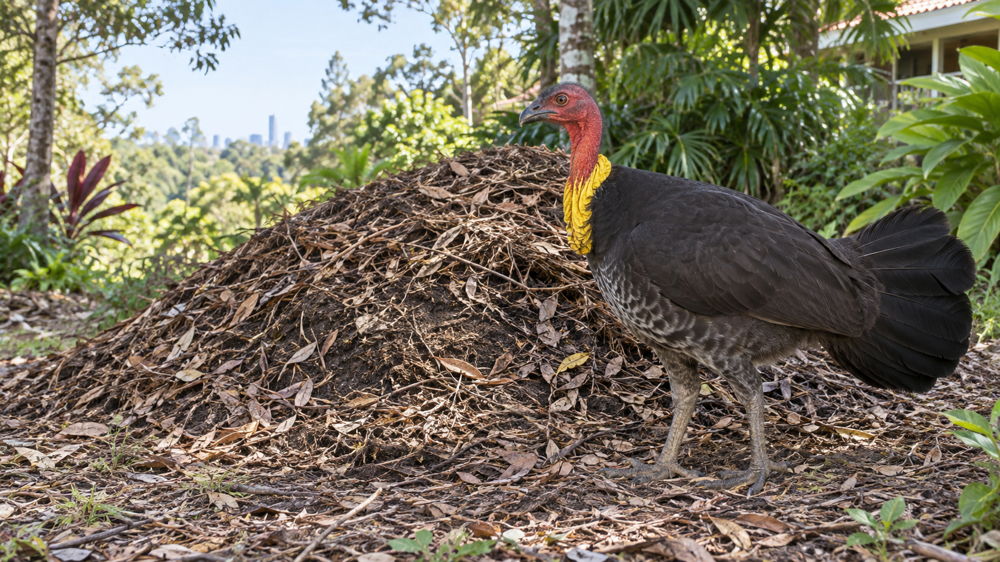

One-way ANOVA with a UQ Brush-turkey Study
F distribution, one-way ANOVA theory, then a UQ biological example
One-way ANOVA with a UQ Brush-turkey Study
Teaching demonstration
First the F distribution. Then one-way ANOVA. Then a local UQ brush-turkey example.
Theory first, followed by an illustrative data analysis.
Lecture road map
- The F distribution and right-tail probabilities
- One-factor ANOVA notation and model
- How ANOVA decomposes variation
- A UQ brush-turkey example: visualizing, hand calculation, then R
The F distribution
The F distribution is a family of continuous probability distributions named after R. A. Fisher.
::: {.three-col compact-cards} ::: {.card} Family notation
We write \(F(df_1,df_2)\). :::
Two degrees of freedom
\(df_1\) is the numerator df and \(df_2\) is the denominator df.
R functions
Use df(), pf(), qf(), and rf().
:::
In ANOVA, the F distribution is the reference distribution for the ratio \(MSF/MSE\).
F-distribution probability calculator
Use the app below to calculate left-tail or right-tail probabilities from an \(F(df_1,df_2)\) distribution.
Why ANOVA?
Analysis of Variance (ANOVA) is used to compare several population means at once.
::: {.three-col compact-cards} ::: {.stat-card} Setting
There are \(d\ge 3\) groups or factor levels. :::
Global question
Do all groups have the same population mean?
Next step
If the global test rejects, compare pairs carefully.
:::
[ H_0:_1=_2==_d. ]
One-factor ANOVA model and notation
ANOVA (Analysis of Variance) compares several population means at once. Suppose we have \(d\) groups, with \(d \ge 3\).
The one-factor ANOVA model is
[ Y_{ik}=+i+{ik}, _{ik}N(0,^2). ]
Equivalently,
[ Y_{ik}=i+{ik}, _{ik}N(0,^2), _i=+_i. ]
::: {.model-defs model-defs-wide} - \(Y_{ik}\): response for observation \(k\) in group \(i\) - \(\mu\): overall mean - \(\tau_i\): effect for group \(i\) - \(\epsilon_{ik}\): random error - \(\mu_i\): mean for group \(i\) - \(\sigma^2\): common variance :::
The model assumes independent errors, approximate normality within groups, and a common variance across groups.
Overall mean and sources of variation {.compact-theory overall-variation-slide}
::: {.data-layout-table overall-data-table} | | Group 1 | Group 2 | \(\cdots\) | Group \(d\) | |:—|:—:|:—:|:—:|:—:| | Observation 1 | \(Y_{11}\) | \(Y_{21}\) | \(\cdots\) | \(Y_{d1}\) | | Observation 2 | \(Y_{12}\) | \(Y_{22}\) | \(\cdots\) | \(Y_{d2}\) | | \(\vdots\) | \(\vdots\) | \(\vdots\) | \(\ddots\) | \(\vdots\) | | Observation \(n_i\) | \(Y_{1n_1}\) | \(Y_{2n_2}\) | \(\cdots\) | \(Y_{dn_d}\) | | Mean | \(\bar Y_1\) | \(\bar Y_2\) | \(\cdots\) | \(\bar Y_d\) | | Sample variance | \(S_1^2\) | \(S_2^2\) | \(\cdots\) | \(S_d^2\) | | Sample size | \(n_1\) | \(n_2\) | \(\cdots\) | \(n_d\) |
::: {.mini-note center} \(\bar Y_i\), \(S_i^2\), and \(n_i\) are the sample mean, sample variance, and sample size for group \(i\).
:::
Total sample size [ n=n_1+n_2++n_d ]
Overall mean [ Y={i=1}^{d}{k=1}^{n_i}Y_{ik} =_{i=1}^{d}n_iY_i ]
Within groups: error variation [ SSE=_{i=1}{d}(n_i-1)S_i2 ]
Between groups: factor variation [ SSF=_{i=1}{d}n_i(Y_i-Y)2 ]
Total source of variation [ SST=SSF+SSE, SST={i=1}^{d}{k=1}{n_i}(Y_{ik}-Y)2 ]
:::
ANOVA table and hypothesis test
| Source | df | SS | MS | \(F\) |
|---|---|---|---|---|
| Factor | \(d-1\) | \(SSF\) | \(MSF=SSF/(d-1)\) | \(MSF/MSE\) |
| Error | \(n-d\) | \(SSE\) | \(MSE=SSE/(n-d)\) | |
| Total | \(n-1\) | \(SST\) |
Hypotheses
[ H_0:_1=_2==_d ]
[ H_a: ]
Test statistic and Reference distribution
[ F=F(d-1,n-d)H_0. ]
The p-value is a right-tail probability.

P-value from the F distribution
For an observed ANOVA statistic \(F^*\),
[ p=P{F(d-1,n-d)F^*}. ]
Large values of \(F^*\) mean the between-level mean square is large relative to the within-level mean square, so ANOVA uses the right tail.
Illustrative example: brush-turkeys at UQ
::: {.two-col-wide example-photo-slide} ::: {.col} - Study: Eiby and Booth (2009), Journal of Comparative Physiology B. - Researchers: Yvonne A. Eiby and David T. Booth, School of Biological Sciences, The University of Queensland. - Eggs came from brush-turkeys breeding on UQ’s St Lucia campus.
A local UQ example makes ANOVA feel like a scientific modelling tool rather than a table-only procedure.
::: ::: {.col}

::: :::Research question and variables
Research question
Does incubation temperature affect the mean incubation period of Australian Brush-turkey eggs?
Factor levels
32 °C, 34 °C, 36 °C.
Response
Incubation period in days.
Data provenance: be transparent
The data are reconstructed integer incubation periods that reproduce the published group means and standard errors. The per-egg values are not the authors’ original observations.
The published F statistic is \(F(2,25)\). Since \(d=3\) levels, \(n=25+3=28\) observations in the incubation-period ANOVA.
Reference: Eiby, Y. A., & Booth, D. T. (2009). The effects of incubation temperature on the morphology and composition of Australian Brush-turkey (Alectura lathami) chicks. Journal of Comparative Physiology B, 179, 875–882. https://doi.org/10.1007/s00360-009-0370-4
First look: boxplots before the test
Before calculating the ANOVA table, compare the distributions visually. The Plotly boxplot shows boxes and whiskers only: no individual points and no zoom/cropping.
Hand calculation: summaries, sums of squares, and F statistic
Group summaries
| Group | \(n_i\) | \(\bar y_i\) | \(s_i^2\) | \(se_i\) |
|---|---|---|---|---|
| 32 °C | 10 | 51.400 | 1.600 | 0.400 |
| 34 °C | 10 | 46.700 | 1.567 | 0.396 |
| 36 °C | 8 | 45.625 | 6.554 | 0.905 |
[ y==48.071. ]
Sums of squares
[ \[\begin{aligned} SSE&=\sum_{i=1}^{3}(n_i-1)s_i^2 \\ &=9(1.600)+9(1.567)+7(6.554)=74.375, \end{aligned}\]]
[ \[\begin{aligned} SSF&=\sum_{i=1}^{3}n_i(\bar y_i-\bar y)^2 \\ &=10(51.400-48.071)^2+10(46.700-48.071)^2 \\ &\qquad +8(45.625-48.071)^2=177.482. \end{aligned}\]]
[ MSF===88.741, MSE===2.975 ]
[ F^*===29.829. ]
Since \(d=3\) and \(n=28\), the reference distribution is \(F(2,25)\) under \(H_0\).
Hand calculation: p-value
[ \[\begin{aligned} p\text{-value} &=P\{F(2,25)\ge 29.829\} \\ &=1-P\{F(2,25)\le 29.829\} \\ &\approx 0.000000239. \end{aligned}\]]
Conclusion: reject \(H_0\) at conventional significance levels. Mean incubation period is not the same for all temperatures.
Same calculation in R: ANOVA table
Same calculation in R: p-value with plot
Is Equal variance Assumption Satisfied
Post hoc comparisons in R
ANOVA tells us whether some mean differs. Tukey comparisons help identify the pairs.
Assumption and robustness checks
Interpretation
The ANOVA provides strong evidence that mean incubation period differs by incubation temperature. The colder 32 °C group takes about five more days than the warmer groups.
The omnibus F-test answers whether there is evidence of any mean difference. Tukey comparisons help translate that into the scientific story: 32 °C differs from the warmer groups, while 34 °C and 36 °C are much closer.
Takeaway
- The F distribution gives the reference curve for a mean-square ratio.
- One-factor ANOVA compares several means with a single omnibus test.
- A good demonstration shows the hand calculation first, then verifies it in R.
- The brush-turkey example connects the method to a local UQ biological study.
Teaching demonstration | One-way ANOVA